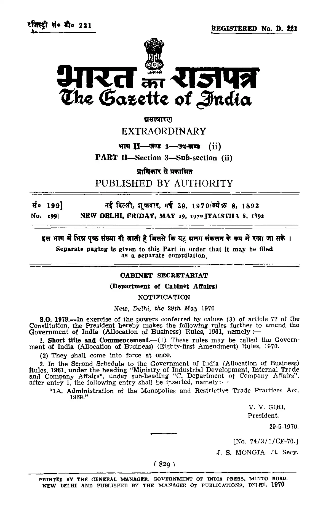

Amendment #81 (S.O. 1979, 1970)
1 change: 0 to the First Schedule, 1 to the Second Schedule. 1 applied
The order, page by page
Page 1 of 2

1after Schedule 2 › Ministry of Industrial Development, Internal Trade and Company Affairs › Department of Company Affairs › entry 1
- 1A. Administration of the Monopolies and Restrictive Trade Practices Act
- 1969.
applied at schedule 2 › ministry Ministry of Industrial Development, Internal Trade and Company Affairs shall be substituted ›… in the Rules after #81
states inferred loose
Page 2 of 2
How this document was read
Changes placed by an inference rule
| Change | Rule | Status | What |
|---|---|---|---|
| 1 | loose | accepted | change 1: ministry Ministry of Industrial Development, Internal Trade and Company Affairs taken for ministry Ministry of Industrial Development, Internal Trade and Company Affairs shall be… |
From the Government of India (Allocation of Business) Rules, 1961 and their amendments, as published by the Cabinet Secretariat (cabsec.gov.in), read by orgpedia. The readings of the older scanned gazettes have known gaps.